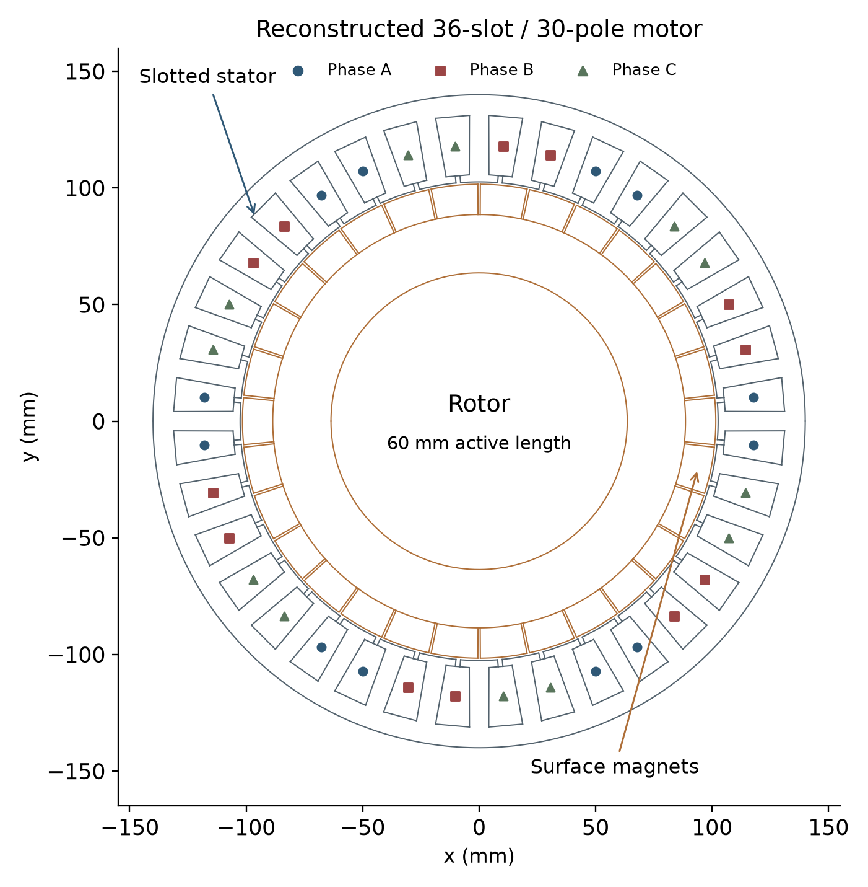
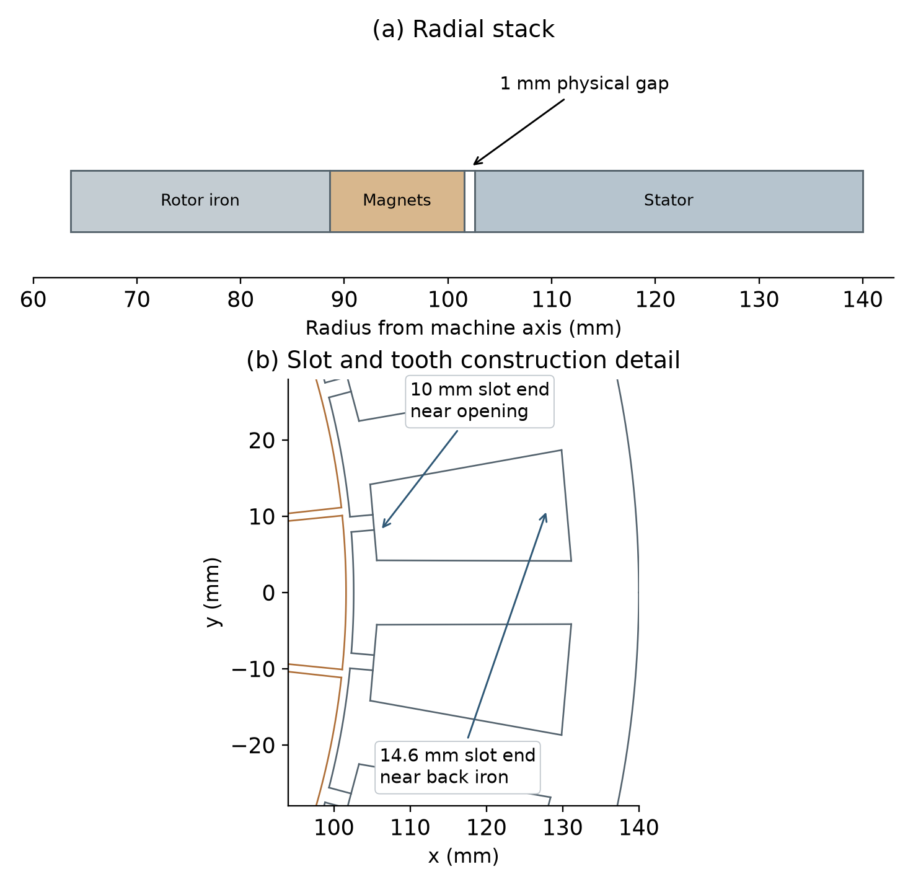
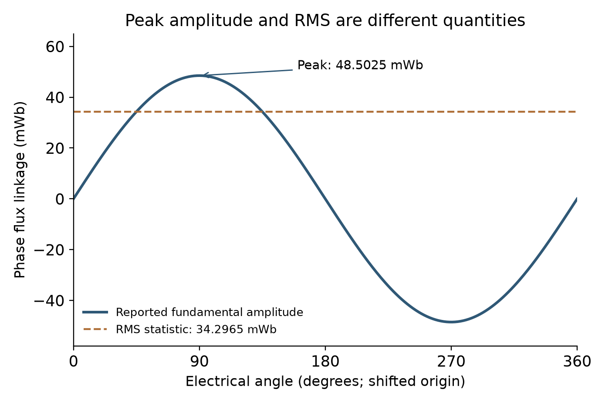
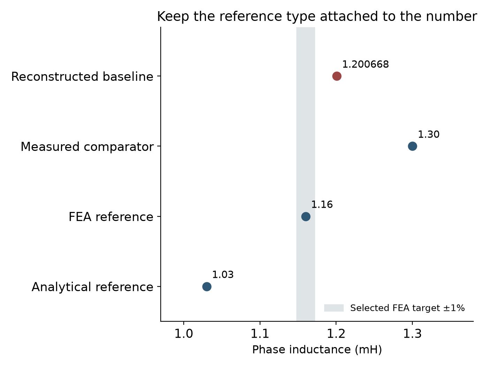
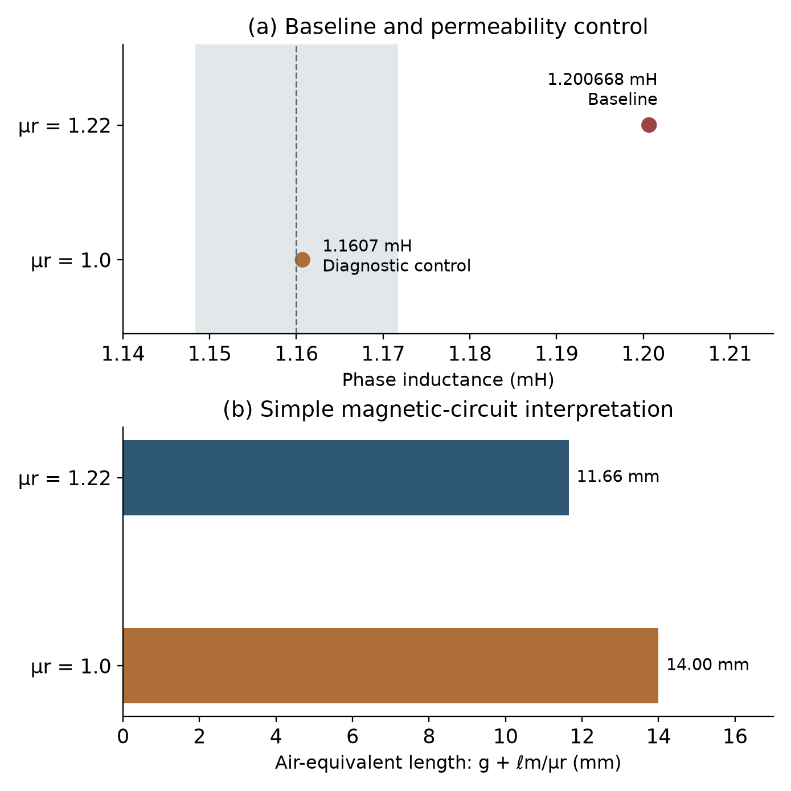

Part 5: Reconstructing a Motor from a Journal Paper
Follow one surface-magnet motor from its published dimensions to a flux-linkage match and an inductance discrepancy.
The VM270 benchmark gave us a compact device with an input listing. A journal paper is a different starting point. Its dimensions, material properties and operating conditions may be spread across tables, figures and discussion, and its purpose is usually to explain a design rather than provide a complete solver input file.
For this article, we’ll follow one motor through that reconstruction process: the 36-slot, 30-pole surface permanent-magnet machine studied by El-Refaie and colleagues in 2006. The model reproduces the selected phase flux-linkage result closely, but its baseline inductance misses the chosen reference. We’ll use that disagreement to examine the physical choices behind the calculation.
Figure 1 shows the reconstructed cross-section. Keeping one motor at the center of the article lets us follow a continuous chain of decisions. The separate tubular-machine reconstruction and its harmonic results remain in the companion appendix; we do not need to change machines midway through this explanation.

Understand the machine before transcribing its tables
The stator is the stationary outer iron structure. Its slots hold the winding conductors. The rotor sits inside it and carries the permanent magnets, with a narrow air gap separating the moving and stationary parts. As the rotor turns, its magnetic field links different amounts of flux to each stator phase.
“36 slots” counts the openings that accommodate the winding sides. “30 poles” counts the alternating magnetic poles around the rotor, giving 15 pole pairs. This design uses concentrated windings around alternate teeth: six coils per phase, each with 18 turns, giving 108 series turns per phase. Those counts are physical assignments, not merely labels in a drawing.
Each tooth coil has conductors in two neighboring slots. In a cross-section, current enters the page on one side of the coil and leaves on the other. The model therefore needs both a phase assignment and the appropriate signed turn count for each winding side. Coloring a slot “phase A” does not completely specify that relationship. Reversing its orientation can change the sign of its flux-linkage contribution while leaving the geometry unchanged.
This gives us a useful check separate from the final reference amplitude. The three phase linkages should be balanced and follow the phase order implied by the winding layout as the rotor turns. The case checks winding signs and phase order as well as the selected phase-A quantity. Those checks help distinguish a construction mistake from a later disagreement about material properties.
The paper investigates the motor’s behavior over a wide speed range. Permanent-magnet flux linkage affects the voltage generated as the rotor turns, while phase inductance affects the winding’s response to applied current. We will concentrate on those two magnetic quantities. Reconstructing them is a defined part of the study, without implying that we have also reproduced its complete drive, loss or high-speed operating results.
The public literature and FEMM’s rotor-motion examples give us established ways to construct slotted stators, magnet rotors and phase windings. Our task is to assemble those methods with this paper’s particular inputs and compare matching measurements. The difficulty is often deciding which physical configuration and convention a reported number describes.
Build the radial dimensions into a coherent drawing
The motor has an outer diameter of 280 mm and an active stack length of 60 mm. The rotor iron extends to a radius of 88.6 mm. The surface magnets are 13 mm deep, bringing their outer radius to 101.6 mm. Adding the 1 mm physical air gap places the stator bore at 102.6 mm. Figure 2 shows that radial stack explicitly.

We use a planar cross-section with a 60 mm depth to represent the active stack. This is the planar interpretation introduced in Part 1: the section extends along the machine’s active length. It does not explicitly include end windings or the full three-dimensional ends of the magnetic structure. That scope will matter when distinguishing measured inductance from a two-dimensional finite-element reference.
The slot geometry exposes a conflict in the source table. The stated slot widths imply teeth about 8.3–8.4 mm wide, while a separate entry gives a tooth width of 11.4 mm. All those dimensions cannot simultaneously describe the same cross-section. Drawing the slot and checking how neighboring features fit makes the inconsistency visible before solving.
The baseline follows the slot-width interpretation. It agrees with the drawing and gives an iron mass within 0.9% of the reported 12.6 kg, providing an independent geometric check. The 11.4 mm tooth interpretation is retained as a separate control. Its resulting inductance is about 1.289 mH, approximately 11% above the selected finite-element reference.
That control makes the alternative reading concrete, but agreement with inductance is not the reason for choosing the baseline geometry. The geometry and mass checks supply the initial interpretation. The numerical control then tells us what the alternative would imply. Keeping those steps in that order avoids choosing dimensions simply because they happen to move a target in the desired direction.
Decide what the two measurements mean
Our first target is the fundamental RMS permanent-magnet flux linkage of a phase, compared with 34.8 mWb in the selected source table. Here “flux linkage” means the winding quantity defined in Part 1. The paper and case use Wb as shorthand for that quantity; it is not a local magnetic flux density in tesla.
As the rotor turns, phase linkage follows a waveform. Its fundamental is the main sinusoidal component at the electrical frequency. RMS and peak amplitude are different conventions: for a sinusoid, peak is √2 times RMS. Figure 3 illustrates that distinction using the fundamental amplitude extracted from the reconstructed machine.

The native case samples 48 rotor positions over half an electrical period and uses the model’s half-wave sign symmetry to form the other half. With 15 pole pairs, a 0.25° mechanical step corresponds to 3.75° electrical. The phase check then examines the resulting full-period representation. Stating this matters: the reconstruction does not independently solve 96 different rotor positions merely because the completed waveform has 96 samples.
The second target is a phase self-inductance of 1.16 mH, the paper’s reported two-dimensional finite-element value. The source also reports an analytical value of 1.03 mH and a measured value around 1.3 mH. Those are useful context, but they have different origins. We choose the 1.16 mH comparison before looking at the reconstructed result and retain it throughout the investigation.
For the linkage comparison, the case uses a 3% acceptance band. For the selected inductance comparison, it uses 1%. The bands belong to those particular quantities and comparisons. A model can satisfy one and fail the other, which is exactly what happens here.
Use a measurement that separates the magnet source from the winding test
The warning from Part 3 now becomes practical. In the permanent-magnet linkage sweep, phase currents are zero and the magnets provide the field. Dividing that linkage by a winding current would not define the inductance we want. The case therefore performs a separate winding-excited test.
For that test, the magnet’s coercive-field source is set to zero while its permeability is retained. Phase A alone is then energized at the selected current. This turns off the magnet source in the calculation; it does not remove the magnet region or replace its material with air. The flux/current ratio is reported for that specified test state.
The essential FEMM operations are short:
mi_modifymaterial("Magnet",3,0)
mi_modifycircprop("A",1,60.81118318204309)Material property 3 is the coercive field parameter; circuit property 1 sets the phase current. The test current is the peak equivalent of 43 A RMS, approximately 60.811 A. After solving, the circuit measurement returns the phase linkage and current used for the ratio:
I,V,linkage = mo_getcircuitproperties("A")
L = linkage/IThe case repeats the winding test at one tenth of that current to examine sensitivity to the iron’s operating point. This is a declared flux/current measurement at those test currents, rather than an incremental derivative about a magnet-biased operating point. The material response and the measurement definition both belong in the comparison.
The complete companion Lua file contains the actual geometry, winding assignments, rotor-position sweep and measurement steps. A separate setup note explains the native replay. The main point here is that two magnetic questions use two different excitation states: magnet-driven phase linkage and winding-driven inductance.
Read the agreement and the disagreement separately
The baseline gives 34.296458 mWb RMS for the phase-A fundamental, compared with 34.8 mWb. The difference is approximately −1.45%, within the selected 3% band. Winding-sign and phase-order checks also pass, supporting the phase assignments and the waveform interpretation used for this measurement.
The phase inductance is 1.200668 mH, compared with 1.16 mH. It is about 3.51% high and fails the 1% comparison. Figure 4 places that result alongside the differently sourced reference values. Lying between an analytical and a measured value does not resolve a mismatch with the finite-element target we actually selected.

The scope of the two-dimensional model helps explain why the measured value needs separate treatment. End-winding leakage can contribute to a physical phase inductance while being absent from the active-stack section. That is a reason to distinguish reference types, not a reason to declare that any value below the measurement is automatically correct.
The successful linkage result is also useful evidence, but it does not settle the inductance. These measurements use different source conditions and respond differently to material and geometry choices. A reconstruction can capture the main magnet-produced linkage while retaining an error in its winding-excited calculation.
Investigate the mismatch with changes we can explain
Several controls examine plausible causes. A coarser mesh changes inductance by roughly −0.09%; changing the steel grade changes it by about −0.6%. The hub and magnet-remanence controls do not explain the gap. The lower-current test gives about 1.2104 mH, so this change in current does not remove the discrepancy either.
The remanence control illustrates why the operating condition belongs with the source value. The design uses Br = 0.55 T at its stated temperature, while the delivered magnets were reported around 0.59 T at room temperature. Using 0.59 T in a separate control raises the RMS phase linkage to about 36.78 mWb, roughly 7.2% above the baseline. That is relevant when interpreting the prototype’s larger linkage, but it describes a different magnet condition from the selected design comparison. It also leaves our winding-excited inductance test unchanged because that test has already switched off the magnet source.
A finer nonlinear sweep ran out of memory after 39 of the planned 50 steps. The partial phase-linkage samples were retained, but the run did not complete the later inductance steps. It therefore cannot be presented as a completed finer-mesh inductance comparison. This is a useful distinction when a long calculation produces some files before failing.
The magnet’s relative permeability has a larger effect. The baseline follows the stated value 1.22. A separate control at 1.0 gives approximately 1.1607 mH, within about 0.06% of the selected reference. Its phase linkage is about 35.24 mWb, also within the original linkage band. Figure 5 shows this control separately from the retained baseline.

Why does magnet permeability matter when its source has been switched off? The unexcited magnet region is still in the path of the winding-produced field. Its material response affects that path. Treating the region as having relative permeability 1.0 instead of 1.22 changes the magnetic reluctance even with remanence inactive.
A simple magnetic-circuit picture helps interpret the direction. A magnet layer of thickness ℓm contributes an air-equivalent length of roughly ℓm/μr when the cross-sectional assumptions permit that approximation. Adding the physical gap gives about 11.66 mm for μr = 1.22 and 14 mm for μr = 1.0. The larger effective gap increases reluctance and tends to reduce the winding inductance. Slot leakage and the full machine geometry still matter, so this simple relation does not predict the exact total inductance.
There is a relevant clue in the paper: its quoted effective air gap is 14 mm, equal to the 13 mm magnet depth plus the 1 mm physical gap. That expression is consistent with a unit-permeability treatment of the magnet layer. Together with the control, it suggests a material-assumption explanation for the inductance discrepancy. It does not establish which material settings were used in the authors’ finite-element file.
Keep the reconstruction and the diagnosis distinct
The baseline therefore remains the model using the stated permeability of 1.22, with its passing linkage result and failing inductance result. The unit-permeability case remains a diagnostic control. A closer number becomes evidence for a hypothesis, not permission to rewrite the initial physical specification after seeing the answer.
This example has added several decisions to the workflow from VM270: interpreting conflicting slot dimensions, constructing phase windings, choosing a waveform convention and defining a separate inductance test. Each decision can be inspected in the case and tied to an input, a source or a numerical control.
The useful next step would be independent clarification of the source’s magnet model or another comparison sensitive to that choice. Meanwhile, the reconstruction is still useful: another reader can reproduce the selected results, examine the retained mismatch and see precisely why the material hypothesis was proposed.
The complete examples and recorded results are available alongside this article.